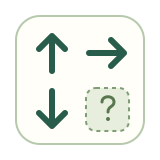

01LEARN BY TRYING AI・機械学習 なぜから学ぶ G検定 AIの全体像から、工場での仕分け体験へ。「なぜ？」をたどりながら、AIの学び方と性能の確かめ方を学びます。 初学者向け 操作して学ぶ 演習は任意 学習をはじめる ↗
02  FIND THE PATTERN 図形推理・トレーニング ひらめき図形ラボ 図形の規則を見つける、非公式の練習アプリ。３問を解き、見る場所が分かる解説で確かめて、次の問題で試します。 まずは３問 ヒント付き 動く解説 練習をはじめる ↗